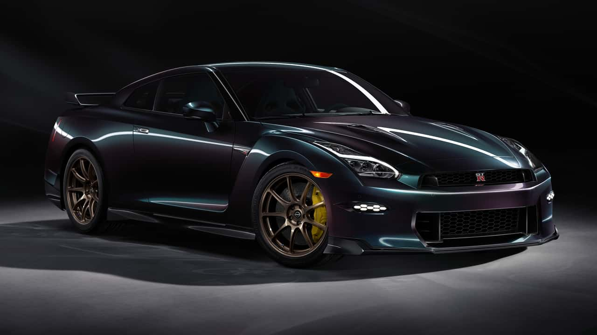

Um Honda Civic G10 rebaixado com letras personalizadas é um projeto de customização que combina a aparência esportiva da suspensão modificada com detalhes únicos e exclusivos na carroceria. Esse tipo de personalização visa criar um visual mais agressivo e único, destacando-o dos modelos de fábrica. Personalizações comuns: Suspensão: O rebaixamento pode ser feito com suspensão fixa, que oferece um visual mais agressivo e sem regulagem, ou com molas esportivas, que baixam o carro, mas mantêm um certo nível de conforto. Letras e emblemas: A personalização de letras e emblemas é um detalhe estético popular. Isso pode incluir a troca dos emblemas originais, o envelopamento deles em uma cor diferente (como o black piano), ou a adição de letras personalizadas na carroceria ou nos aros das rodas. Rodas e pneus: Rodas maiores, como as de aro 18 ou 20, são frequentemente instaladas para complementar a suspensão rebaixada. As cores e designs podem ser personalizados, e os aros podem ser envelopados ou pintados, como na cor black piano. Envelopamento: O envelopamento é uma técnica muito usada para mudar a cor de partes do carro, como o teto (envelopado de preto) e os detalhes cromados (feitos em black piano). Essa técnica cria um visual mais coeso e moderno. Outros detalhes: Aerofólios, faróis e lanternas customizadas, saias laterais e a substituição das ponteiras de escape também são modificações comuns, inspiradas em versões mais esportivas como a Type R.

O Nissan GT-R é um icônico superesportivo japonês, frequentemente apelidado de "Godzilla", conhecido por seu alto desempenho e tecnologia avançada. Desde seu lançamento, o modelo R35 tem se destacado por oferecer um desempenho excepcional por um valor mais acessível do que muitos concorrentes europeus. Características específicas (modelo R35) Desempenho e motorização Motorização: V6 biturbo de 3.8 litros. Potência: Varia de acordo com a versão e o ano. Na versão normal (2024), gera cerca de 570 cv, enquanto a variante Nismo pode atingir 600 cv. Transmissão: Dupla embreagem de seis velocidades. Tração: Integral, que proporciona uma aderência impressionante e uma aceleração explosiva, permitindo que o carro atinja 100 km/h em menos de 3 segundos nas versões mais recentes. Montagem artesanal: Cada motor é montado à mão por uma pequena equipe de engenheiros altamente qualificados, conhecidos como "Takumi". Design e aerodinâmica Visual agressivo: Apresenta linhas agressivas e aerodinâmicas, com uma frente imponente e uma traseira marcada por quatro saídas de escape e um difusor esportivo. Funcionalidade: O design não visa apenas a estética; é funcional e projetado para otimizar o fluxo de ar, melhorando a estabilidade e a performance. Interior e tecnologia Foco no motorista: A cabine é centrada no motorista, com bancos esportivos que oferecem suporte durante a pilotagem em alta velocidade. Display multifuncional: O painel inclui uma tela que exibe uma vasta gama de informações sobre o desempenho do veículo, como pressão do turbo, temperatura do óleo e até força G. Materiais de alta qualidade: O acabamento utiliza materiais como couro e alumínio, combinando conforto com um toque esportivo. Legado O GT-R consolidou sua reputação nas pistas, desafiando superesportivos mais caros e quebrando recordes de tempo em circuitos como o de Nürburgring. Seu sucesso nas competições e sua tecnologia inovadora o transformaram em uma lenda automotiva.